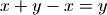
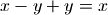

Arithmetic and number parts¶
Arithmetic operations¶
fadd()¶
- mpmath.mptypes.fadd(ctx, x, y, **kwargs)¶
Adds the numbers x and y, giving a floating-point result, optionally using a custom precision and rounding mode.
The default precision is the working precision of the context. You can specify a custom precision in bits by passing the prec keyword argument, or by providing an equivalent decimal precision with the dps keyword argument. If the precision is set to +inf, or if the flag exact=True is passed, an exact addition with no rounding is performed.
When the precision is finite, the optional rounding keyword argument specifies the direction of rounding. Valid options are 'n' for nearest (default), 'f' for floor, 'c' for ceiling, 'd' for down, 'u' for up.
Examples
Using fadd() with precision and rounding control:
>>> from mpmath import * >>> mp.dps = 15 >>> fadd(2, 1e-20) mpf('2.0') >>> fadd(2, 1e-20, rounding='u') mpf('2.0000000000000004') >>> nprint(fadd(2, 1e-20, prec=100), 25) 2.00000000000000000001 >>> nprint(fadd(2, 1e-20, dps=15), 25) 2.0 >>> nprint(fadd(2, 1e-20, dps=25), 25) 2.00000000000000000001 >>> nprint(fadd(2, 1e-20, exact=True), 25) 2.00000000000000000001
Exact addition avoids cancellation errors, enforcing familiar laws of numbers such as , which don’t hold in floating-point arithmetic with finite precision:
>>> x, y = mpf(2), mpf('1e-1000') >>> print x + y - x 0.0 >>> print fadd(x, y, prec=inf) - x 1.0e-1000 >>> print fadd(x, y, exact=True) - x 1.0e-1000
Exact addition can be inefficient and may be impossible to perform with large magnitude differences:
>>> fadd(1, '1e-100000000000000000000', prec=inf) Traceback (most recent call last): ... OverflowError: the exact result does not fit in memory
fsub()¶
- mpmath.mptypes.fsub(ctx, x, y, **kwargs)¶
Subtracts the numbers x and y, giving a floating-point result, optionally using a custom precision and rounding mode.
See the documentation of fadd() for a detailed description of how to specify precision and rounding.
Examples
Using fsub() with precision and rounding control:
>>> from mpmath import * >>> mp.dps = 15 >>> fsub(2, 1e-20) mpf('2.0') >>> fsub(2, 1e-20, rounding='d') mpf('1.9999999999999998') >>> nprint(fsub(2, 1e-20, prec=100), 25) 1.99999999999999999999 >>> nprint(fsub(2, 1e-20, dps=15), 25) 2.0 >>> nprint(fsub(2, 1e-20, dps=25), 25) 1.99999999999999999999 >>> nprint(fsub(2, 1e-20, exact=True), 25) 1.99999999999999999999
Exact subtraction avoids cancellation errors, enforcing familiar laws of numbers such as , which don’t hold in floating-point arithmetic with finite precision:
>>> x, y = mpf(2), mpf('1e1000') >>> print x - y + y 0.0 >>> print fsub(x, y, prec=inf) + y 2.0 >>> print fsub(x, y, exact=True) + y 2.0
Exact addition can be inefficient and may be impossible to perform with large magnitude differences:
>>> fsub(1, '1e-100000000000000000000', prec=inf) Traceback (most recent call last): ... OverflowError: the exact result does not fit in memory
fneg()¶
- mpmath.mptypes.fneg(ctx, x, **kwargs)¶
Negates the number x, giving a floating-point result, optionally using a custom precision and rounding mode.
See the documentation of fadd() for a detailed description of how to specify precision and rounding.
Examples
An mpmath number is returned:
>>> from mpmath import * >>> mp.dps = 15 >>> fneg(2.5) mpf('-2.5') >>> fneg(-5+2j) mpc(real='5.0', imag='-2.0')
Precise control over rounding is possible:
>>> x = fadd(2, 1e-100, exact=True) >>> fneg(x) mpf('-2.0') >>> fneg(x, rounding='f') mpf('-2.0000000000000004')
Negating with and without roundoff:
>>> n = 200000000000000000000001 >>> print int(-mpf(n)) -200000000000000016777216 >>> print int(fneg(n)) -200000000000000016777216 >>> print int(fneg(n, prec=log(n,2)+1)) -200000000000000000000001 >>> print int(fneg(n, dps=log(n,10)+1)) -200000000000000000000001 >>> print int(fneg(n, prec=inf)) -200000000000000000000001 >>> print int(fneg(n, dps=inf)) -200000000000000000000001 >>> print int(fneg(n, exact=True)) -200000000000000000000001
fmul()¶
- mpmath.mptypes.fmul(ctx, x, y, **kwargs)¶
Multiplies the numbers x and y, giving a floating-point result, optionally using a custom precision and rounding mode.
See the documentation of fadd() for a detailed description of how to specify precision and rounding.
Examples
The result is an mpmath number:
>>> from mpmath import * >>> mp.dps = 15 >>> fmul(2, 5.0) mpf('10.0') >>> fmul(0.5j, 0.5) mpc(real='0.0', imag='0.25')
Avoiding roundoff:
>>> x, y = 10**10+1, 10**15+1 >>> print x*y 10000000001000010000000001 >>> print mpf(x) * mpf(y) 1.0000000001e+25 >>> print int(mpf(x) * mpf(y)) 10000000001000011026399232 >>> print int(fmul(x, y)) 10000000001000011026399232 >>> print int(fmul(x, y, dps=25)) 10000000001000010000000001 >>> print int(fmul(x, y, exact=True)) 10000000001000010000000001
Exact multiplication with complex numbers can be inefficient and may be impossible to perform with large magnitude differences between real and imaginary parts:
>>> x = 1+2j >>> y = mpc(2, '1e-100000000000000000000') >>> fmul(x, y) mpc(real='2.0', imag='4.0') >>> fmul(x, y, rounding='u') mpc(real='2.0', imag='4.0000000000000009') >>> fmul(x, y, exact=True) Traceback (most recent call last): ... OverflowError: the exact result does not fit in memory
fdiv()¶
- mpmath.mptypes.fdiv(ctx, x, y, **kwargs)¶
Divides the numbers x and y, giving a floating-point result, optionally using a custom precision and rounding mode.
See the documentation of fadd() for a detailed description of how to specify precision and rounding.
Examples
The result is an mpmath number:
>>> from mpmath import * >>> mp.dps = 15 >>> fdiv(3, 2) mpf('1.5') >>> fdiv(2, 3) mpf('0.66666666666666663') >>> fdiv(2+4j, 0.5) mpc(real='4.0', imag='8.0')
The rounding direction and precision can be controlled:
>>> fdiv(2, 3, dps=3) # Should be accurate to at least 3 digits mpf('0.6666259765625') >>> fdiv(2, 3, rounding='d') mpf('0.66666666666666663') >>> fdiv(2, 3, prec=60) mpf('0.66666666666666667') >>> fdiv(2, 3, rounding='u') mpf('0.66666666666666674')
Checking the error of a division by performing it at higher precision:
>>> fdiv(2, 3) - fdiv(2, 3, prec=100) mpf('-3.7007434154172148e-17')
Unlike fadd(), fmul(), etc., exact division is not allowed since the quotient of two floating-point numbers generally does not have an exact floating-point representation. (In the future this might be changed to allow the case where the division is actually exact.)
>>> fdiv(2, 3, exact=True) Traceback (most recent call last): ... ValueError: division is not an exact operation
Complex components¶
fabs()¶
- mpmath.functions.fabs(x)¶
Returns the absolute value of
 ,
,  . Unlike abs(),
fabs() converts non-mpmath numbers (such as int)
into mpmath numbers:
. Unlike abs(),
fabs() converts non-mpmath numbers (such as int)
into mpmath numbers:>>> from mpmath import * >>> mp.dps = 15; mp.pretty = False >>> fabs(3) mpf('3.0') >>> fabs(-3) mpf('3.0') >>> fabs(3+4j) mpf('5.0')
re()¶
- mpmath.functions.re(x)¶
Returns the real part of
,  . Unlike x.real,
re() converts to a mpmath number:
. Unlike x.real,
re() converts to a mpmath number:>>> from mpmath import * >>> mp.dps = 15; mp.pretty = False >>> re(3) mpf('3.0') >>> re(-1+4j) mpf('-1.0')
im()¶
- mpmath.functions.im(x)¶
Returns the imaginary part of
,  . Unlike x.imag,
im() converts to a mpmath number:
. Unlike x.imag,
im() converts to a mpmath number:>>> from mpmath import * >>> mp.dps = 15; mp.pretty = False >>> im(3) mpf('0.0') >>> im(-1+4j) mpf('4.0')
arg()¶
- mpmath.functions.arg(x)¶
Computes the complex argument (phase) of
, defined as the
signed angle between the positive real axis and in the
complex plane:>>> from mpmath import * >>> mp.dps = 15; mp.pretty = True >>> arg(3) 0.0 >>> arg(3+3j) 0.785398163397448 >>> arg(3j) 1.5707963267949 >>> arg(-3) 3.14159265358979 >>> arg(-3j) -1.5707963267949
The angle is defined to satisfy
 and
with the sign convention that a nonnegative imaginary part
results in a nonnegative argument.
and
with the sign convention that a nonnegative imaginary part
results in a nonnegative argument.The value returned by arg() is an mpf instance.
 . Unlike
. Unlike
Floor and ceiling functions¶
floor()¶
- mpmath.functions.floor(x, **kwargs)¶
Computes the floor of
,  , defined as
the largest integer less than or equal to :
, defined as
the largest integer less than or equal to :>>> from mpmath import * >>> mp.pretty = False >>> floor(3.5) mpf('3.0')
Note: floor() returns a floating-point number, not a Python int. If
is too large to be
represented exactly at the present working precision, the
result will be rounded, not necessarily in the floor
direction.
ceil()¶
- mpmath.functions.ceil(x, **kwargs)¶
Computes the ceiling of
,  , defined as
the smallest integer greater than or equal to :
, defined as
the smallest integer greater than or equal to :>>> from mpmath import * >>> mp.pretty = False >>> ceil(3.5) mpf('4.0')
Note: ceil() returns a floating-point number, not a Python int. If
is too large to be
represented exactly at the present working precision, the
result will be rounded, not necessarily in the ceiling
direction.
Modulo¶
modf()¶
- mpmath.functions.modf(x, y)¶
Converts
and  to mpmath numbers and returns
to mpmath numbers and returns  .
For mpmath numbers, this is equivalent to x % y.
.
For mpmath numbers, this is equivalent to x % y.>>> from mpmath import * >>> mp.dps = 15; mp.pretty = True >>> modf(100, pi) 2.61062773871641
You can use modf() to compute fractional parts of numbers:
>>> modf(10.25, 1) 0.25
Exponent decomposition¶
ldexp()¶
- mpmath.functions.ldexp(x, n)¶
Computes
 efficiently. No rounding is performed.
The argument must be a real floating-point number (or
possible to convert into one) and
efficiently. No rounding is performed.
The argument must be a real floating-point number (or
possible to convert into one) and  must be a Python int.
must be a Python int.>>> from mpmath import * >>> mp.dps = 15; mp.pretty = False >>> ldexp(1, 10) mpf('1024.0') >>> ldexp(1, -3) mpf('0.125')
 with
with  ,
,
 . No rounding is
performed.
. No rounding is
performed.Vector components¶
hypot()¶
- mpmath.functions.hypot(x, y)¶
- Computes the Euclidean norm of the vector
 , equal
to
, equal
to  . Both and must be real.
. Both and must be real.
atan2()¶
- mpmath.functions.atan2(y, x)¶
Computes the two-argument arctangent,
 ,
giving the signed angle between the positive -axis and the
point in the 2D plane. This function is defined for
real and only.
,
giving the signed angle between the positive -axis and the
point in the 2D plane. This function is defined for
real and only.The two-argument arctangent essentially computes
 , but accounts for the signs of both
and to give the angle for the correct quadrant. The
following examples illustrate the difference:
, but accounts for the signs of both
and to give the angle for the correct quadrant. The
following examples illustrate the difference:>>> from mpmath import * >>> mp.dps = 15; mp.pretty = True >>> atan2(1,1), atan(1/1.) (0.785398163397448, 0.785398163397448) >>> atan2(1,-1), atan(1/-1.) (2.35619449019234, -0.785398163397448) >>> atan2(-1,1), atan(-1/1.) (-0.785398163397448, -0.785398163397448) >>> atan2(-1,-1), atan(-1/-1.) (-2.35619449019234, 0.785398163397448)
The angle convention is the same as that used for the complex argument; see arg().